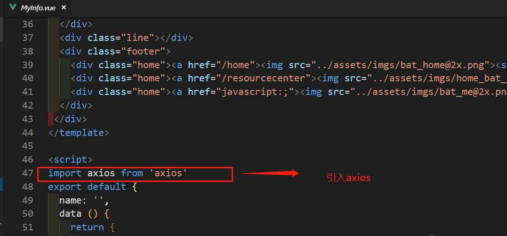
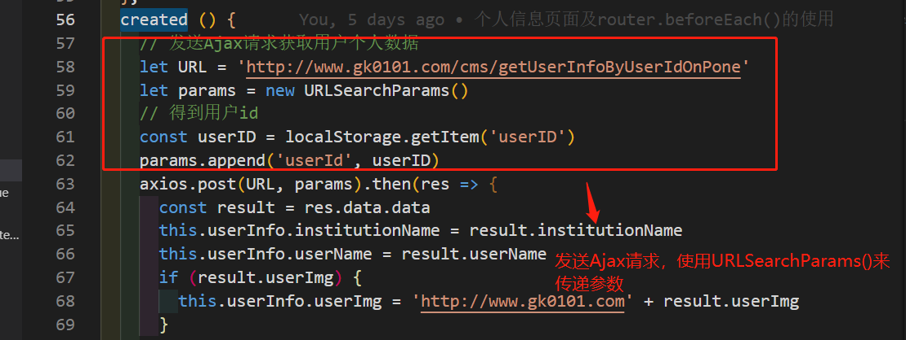
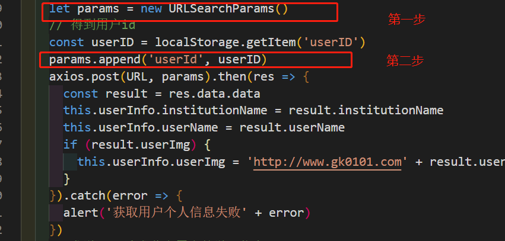
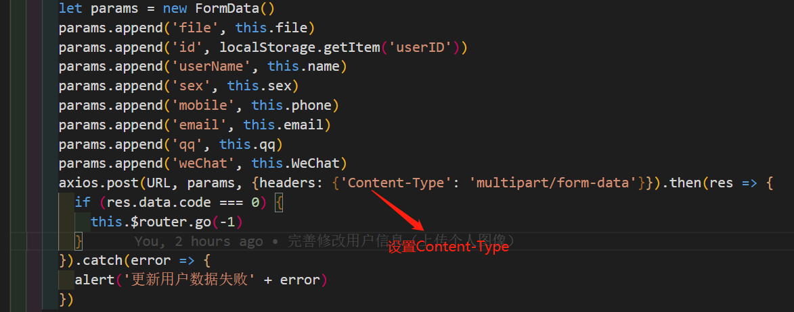
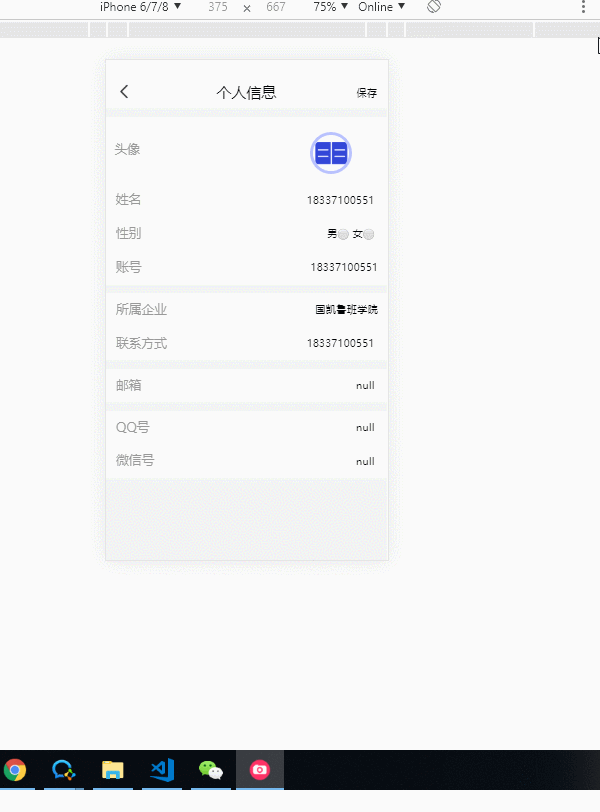

现在前端开发中需要通过Ajax发送请求获取后端数据是很普遍的一件事情了，鉴于我平时在撸码中用的是vue技术栈，今天这里来谈谈我们常用的发Ajax请求的一个插件—axios。
> 现在网上可能发送Ajax请求有很多种插件，每种用法可能略有差异，大家只需挑选一种自己喜欢的即可。毕竟现在还有很多人使用jQuery，$.ajax用法也是很多了。
因为需要用到axios插件，所以我们现在项目种下载依赖
npm install axios -Saxios虽然是一个插件，但是我们不需要通过Vue.use(axios)来使用，下载完成后，只需在项目中引入即可，至于为什么大家可以百度看看，或者留言，貌似是因为开发者在封装axios时，没有写install这一步。
比如我们在项目中的myInfo.vue中使用axios，当组件在创建成功后发送Ajax请求得到用户信息展示在我们面前。先引入，然后在组件生命周期函数created中发请求。

如果需要先请求数据然后根据数据渲染页面展示在我们面前，通常可以在组件生命周期钩子created中发送Ajax请求即可，此时组件实例中的属性和方法可以被调用。

现在到了重点的时刻了~~~
axios 使用 post 发送数据时，默认是直接把 json 放到请求体中提交到后端的。也就是说，我们的 Content-Type 变成了 application/json;charset=utf-8 ,这是axios默认的请求头content-type类型。但是实际我们后端要求的 'Content-Type': 'application/x-www-form-urlencoded' 为多见，这就与我们不符合。所以很多同学会在这里犯错误，导致请求数据获取不到。明明自己的请求地址和参数都对了却得不到数据。
我们现在来说说post请求常见的数据格式（content-type）
我们熟悉了常见的请求数据格式之后，现在我们来解决刚才遇到的问题： 后端需要接受的数据类型为：application/x-www-form-urlencoded，我们前端该如何配置：
常见方法汇总：
let param = new URLSearchParams()
param.append('username', 'admin')
param.append('pwd', 'admin')
axios({
method: 'post',
url: '/api/lockServer/search',
data: param
})可以看到我在项目中采用的就是第一种方法。> 需要注意的是： URLSearchParams 不支持所有的浏览器，但是总体的支持情况还是 OK 的，所以优先推荐这种简单直接的解决方案

axios.defaults.headers.post['Content-Type'] = 'application/x-www-form-urlencoded'; 或者 {headers:{'Content-Type':'application/x-www-form-urlencoded'}}引入 qs ，这个库是 axios 里面包含的，不需要再下载了。
import Qs from 'qs'
let data = {
"username": "cc",
"psd": "123456"
}
axios({
headers: {
'Content-Type': 'application/x-www-form-urlencoded'
},
method: 'post',
url: '/api/lockServer/search',
data: Qs.stringify(data)
})好了，我们解决了常见的application/x-www-form-urlencoded形式的传参，那么对于后面的两种又是怎样转换的呢，且听我一一道来。
对于这种类型的数据，我们常见前端页面上传个人图像，然后点击保存发送后端修改原始数据。解决办法下：
let params = new FormData()
params.append('file', this.file)
params.append('id', localStorage.getItem('userID'))
params.append('userName', this.name)
params.append('sex', this.sex)
params.append('mobile', this.phone)
params.append('email', this.email)
params.append('qq', this.qq)
params.append('weChat', this.WeChat)
axios.post(URL, params, {headers: {'Content-Type': 'multipart/form-data'}}).then(res => {
if (res.data.code === 0) {
this.$router.go(-1)
}
}).catch(error => {
alert('更新用户数据失败' + error)
})可以看到我这里就是用到了这种方法实现用户图像更新效果的~~


这种是axios默认的请求数据类型，我们只需将参数序列化json字符串进行传递即可，无需多余的配置。
好了，以上基本的axios配置Content-Type的方法就讲述到这里，欢迎大家提出更好的建议和指正其中的错误。
同时大家也可以在GitHub上给我分享更多实用的前端知识，欢迎star，哈哈
GitHub 戳这里